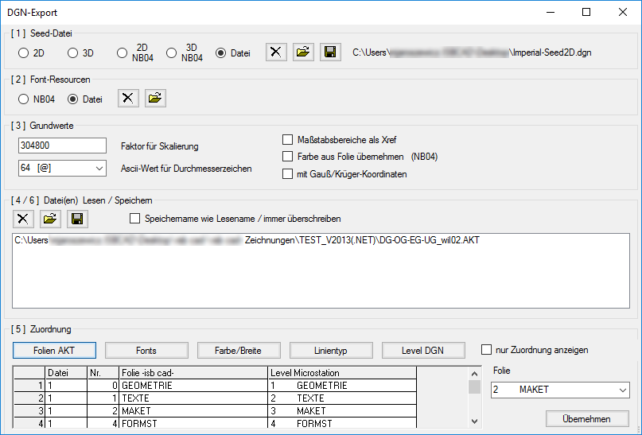
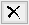
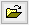
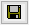

Windows-Startmenü → Programmgruppe ISBCAD 2026 → Hauptmenü → DGN Export
Öffnet den Dialog DGN Export.
MicroStation© ist ein 3D-CAD Programm für den Entwurf, Konstruktion und Betrieb von Gebäuden. Für die Datenkonvertierung benötigen Sie die Hinweise über die Datenstruktur des Empfängers. In der Datenstruktur sind die Zielparameter aufgelistet.
Im folgenden Dialog gehen Sie bitte Schritt für Schritt [1] bis [6] vor.
Siehe für weitere Informationen: https://www.bentley.com/de-DE/
Optionen im Dialog "DGN-Export"
 |
[1] Seed-Datei
Hierbei handelt es sich um eine leere DGN-Datei, in der Folien, Farb- und Linientypinformationen vom Auftraggeber enthalten sind.
(Integrierte Seed-Dateien)
Microstation (2D / 3D); WSV (2D NB04 / 3D NB04).
¤ Datei
Auswahl einer Seed-Datei, in der die erforderlichen Informationen enthalten sind.

Ausgewählte Datei entfernen.

Vorhandene Seed-Datei auswählen. Wird vom Auftraggeber gestellt.

Es wird eine leere ISBCAD Zeichnungsdatei (*.akt) mit Folienstruktur erzeugt.
[2] Font Ressourcen
NB04
Integrierte Fontdatei (WSV)
¤ Datei
Auswahl einer Seed-Datei, in der die erforderlichen Informationen enthalten sind.
Auswahl aufheben.
Auswahl einer Datei, in der die Schriftarten enthalten sind.
[3] Grundwerte
Faktor für Skalierung
Einheiten pro Meter. Dieser Wert wird nach dem Auswählen einer Seed-Datei neu gesetzt.
ASCII-Wert für Durchmesserzeichen
Austauschwert für das Durchmesserzeichen.
Maßstabsbereiche als Xref
Es wird für jeden Maßstabsbereich eine Zeichnung erstellt und eine Hauptdatei, die die einzelnen Dateien als Xref einfügt.
Farbe aus Folie übernehmen (NB04)
Die Zeichnungselemente erhalten die Farbe der Folienfarbe.
Mit Gauß/Krüger-Koordinaten
Ein erstelltes Koordinatensystem wird verwendet. Alle Elemente erhalten die Koordinaten des Bezugssystems.
[4 / 6] Datei(en) Lesen / Speichern
Dateiliste löschen.
ISBCAD Zeichnungsdateien (*.akt) lesen. Mehrfachauswahl durch Mausklick bei gedrückter Strg-Taste. Markierung aller Dateien zwischen dem ersten und zweiten Mausklick bei gedrückter Umschalt-Taste. Alle Dateien können mit Strg + A markiert werden. Sie können Dateien nur aus einem Ordner auswählen.
DGN-Dateien speichern.
Speichername wie Lesename / immer überschreiben
Wenn das Speichern ohne Rückfrage erfolgen soll, setzen Sie hier einen Haken. Wenn die Datei bereits vorhanden ist, wird sie automatisch überschrieben.
[5] Zuordnung
nur Zuordnung anzeigen
Die Bereiche [1] - [4 / 6] werden ausgeblendet.

Um vorgenommene Änderungen zu übernehmen, klicken Sie auf diese Schaltfläche. Je nachdem, um welche Zuordnung es sich handelt, werden unterschiedliche Parameter rechts neben der Zuordnungstabelle eingeblendet. Klicken Sie auf  , um die Dropdown-Liste aufzuschlagen und einen Eintrag auszuwählen. Alternativ können Sie den entsprechenden Eintrag mit den Pfeiltasten auswählen und durch Drücken der Eingabetaste die Änderung sofort übernehmen.
, um die Dropdown-Liste aufzuschlagen und einen Eintrag auszuwählen. Alternativ können Sie den entsprechenden Eintrag mit den Pfeiltasten auswählen und durch Drücken der Eingabetaste die Änderung sofort übernehmen.
Werte können auch spaltenweise geändert werden. Klicken Sie dazu in die Spaltenüberschrift, um alle Einträge zu markieren.
Folien AKT
Sie können die Folien der Zeichnungen für die DGN-Datei angeben. Automatisch wird der benutzte Name vorgeschlagen. Sie können die Zuordnung ändern, indem Sie für eine markierte Zeile aus dem Auswahlfeld einen Eintrag anklicken.
Fonts
Zuweisen der Schriftarten.
Farbe/Breite
Wenn die Farbe nicht mit der Option Farbe aus Folie übernehmen (NB04) aus der Folie übernommen wird (siehe: [3] Grundwerte), können Sie die Einstellungen manuell vornehmen. Wählen Sie für die markierte Zeile die geforderte Farbe und die Breite in Pixel für die Darstellung am Bildschirm.
Linientyp
Tragen Sie die Nummer des Linientyps [LTyp] für die markierte Zeile in die Eingabe ein.
Level DGN
Alle Folien aus der Seed-Datei und der ISBCAD Zeichnung werden in Level übertragen. Den Level kann zusätzlich eine Farbe, Breite in Pixel und ein Linientyp [LTyp] zugeordnet werden.